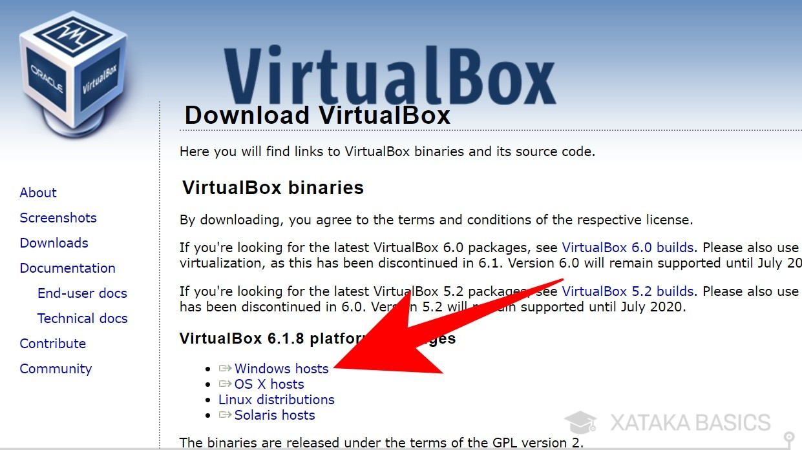
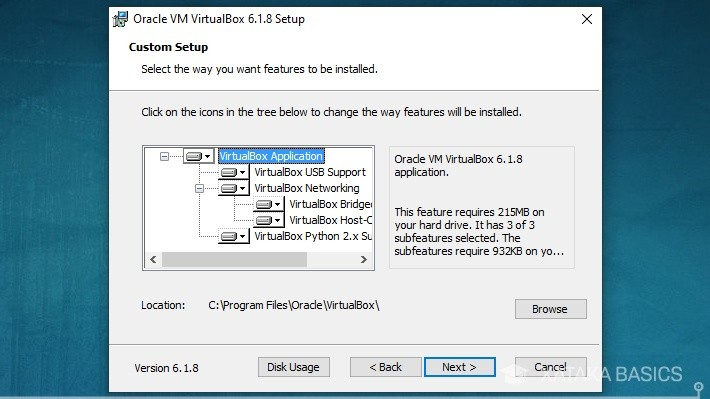
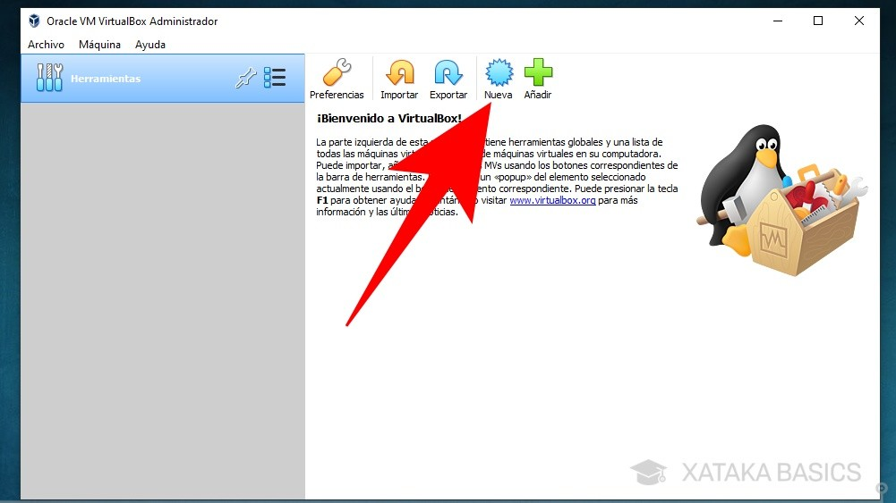
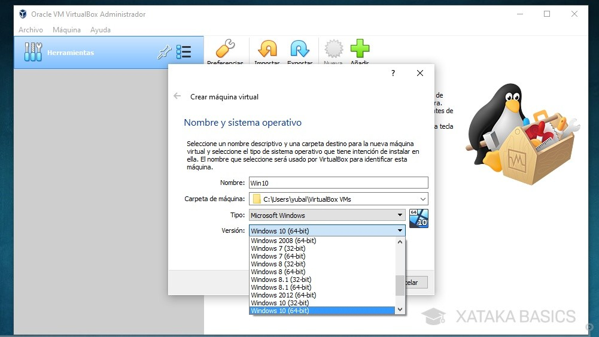
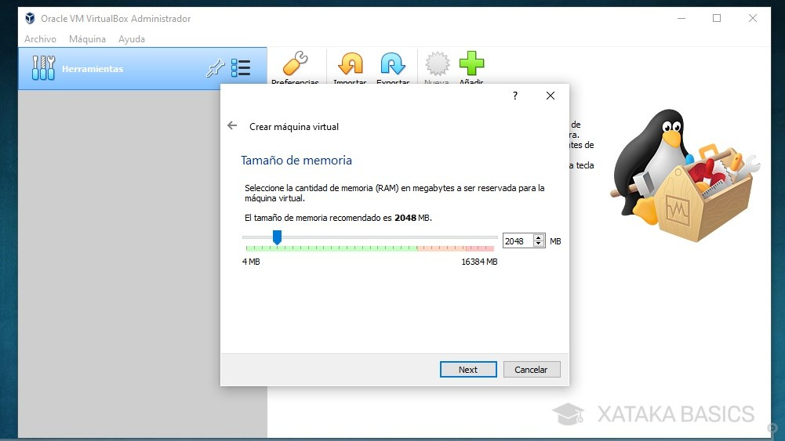
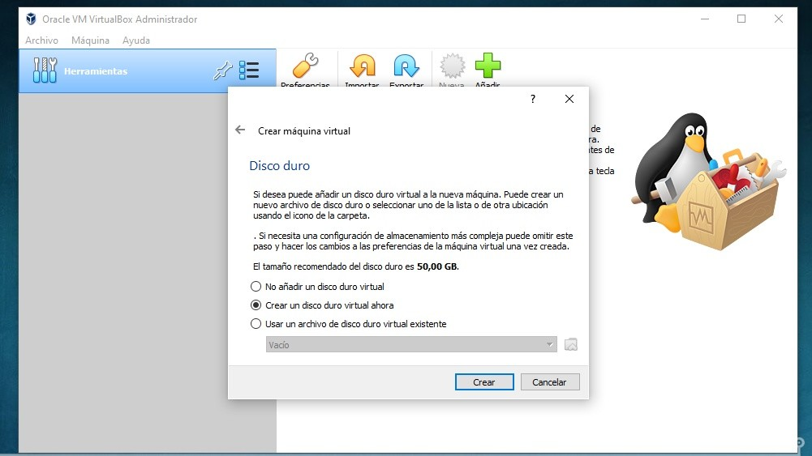
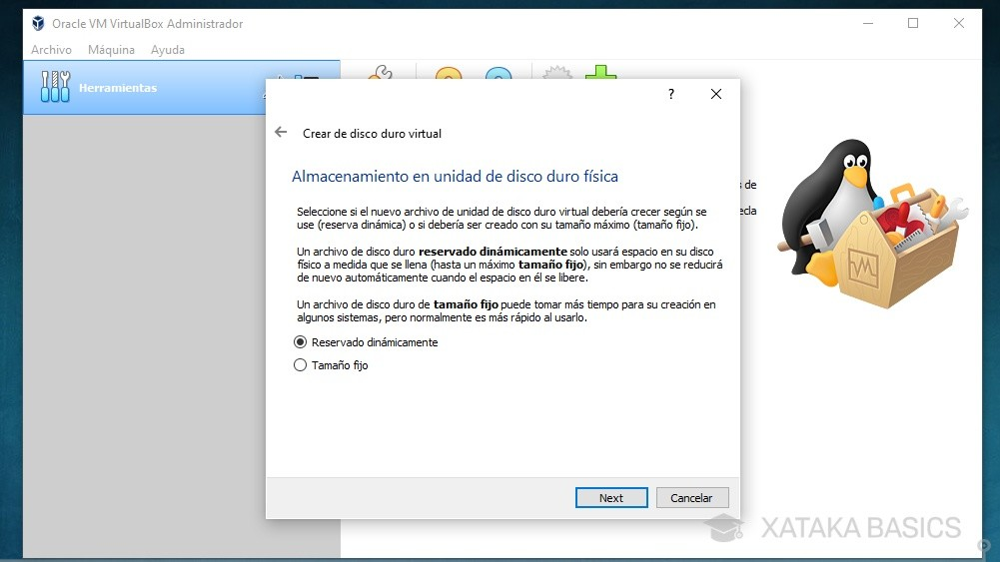
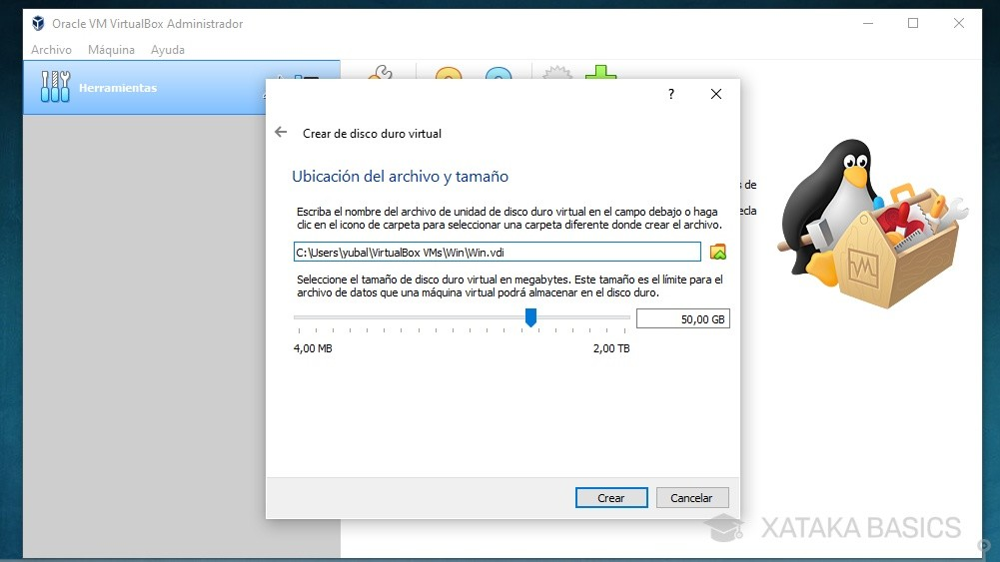
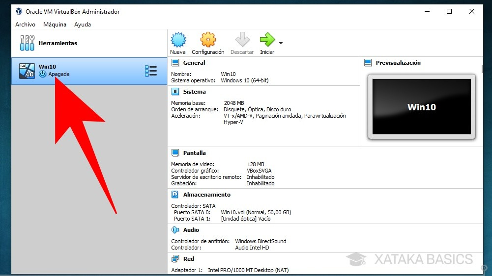
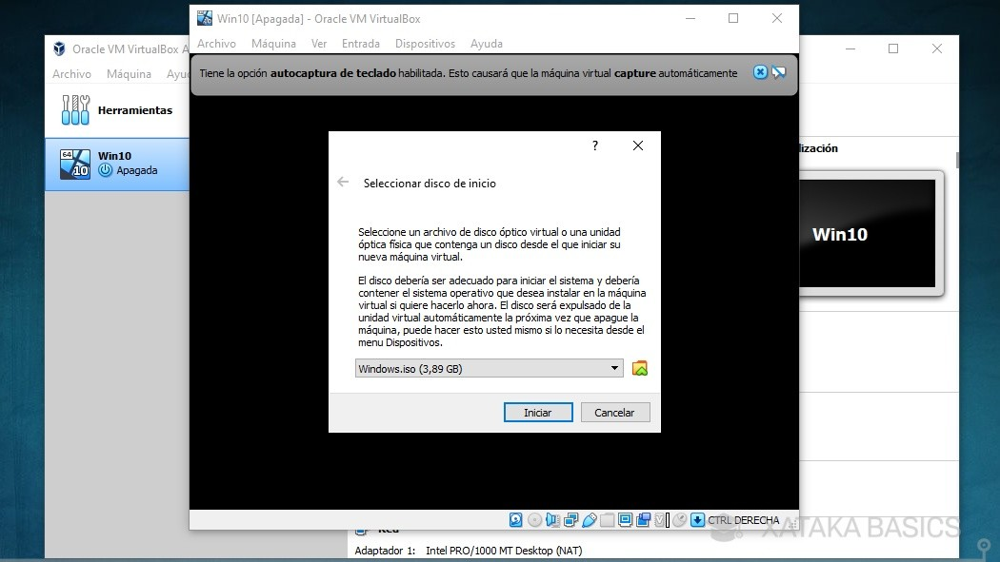

Crear Maquinas Virtuales
Como su propio nombre indica y a grandes rasgos, se trata de un entorno virtual sobre el que podemos instalar un sistema operativo que podremos usar sobre el sistema operativo principal de nuestro ordenador. En estos entornos se emula un hardware que no es otro que el propio de nuestro PC para comportarse como si estuviéramos en otro equipo físico y otro sistema operativo instalado. Ahora bien, todo es emulado puesto que todo se seguirá ejecutando dentro de nuestro PC. El sistema operativo de la máquina virtual al final es un programa que también se ejecuta en nuestro equipo.
VirtualBox
Es una de las herramientas más populares y utilizadas para crear máquinas virtuales. Se trata de un software multiplataforma y que además podemos conseguir desde la web oficial de forma totalmente gratuito, lo que ha hecho que se vuelva tan popular.
Pero eso no es todo, ya que además ofrece una gran cantidad de funciones y parámetros personalizables, la posibilidad de instalar software en la máquina virtual con permisos adicionales para poder realizar determinadas tareas como compartir archivos, unidades o incluso periféricos, etc.
Virtualbox
VirtualBox es una aplicación que sirve para hacer máquinas virtuales con instalaciones de sistemas operativos. Esto quiere decir que si tienes un ordenador con Windows, GNU/Linux o incluso macOS, puedes crear una máquina virtual con cualquier otro sistema operativo para utilizarlo dentro del que estés usando.
Lo primero que tienes que hacer es descargar e instalar VirtualBox. Para ello, entra en la web VirtualBox.org, y en su pantalla principal pulsa sobre el botón de Download, que te llevará a la página en la que encuentras los paquetes para descargar.
Descarga Aqui:Virtualbox Una vez entres en la página de descargas, vas a encontrar muchas cosas, como binarios para los usuarios avanzados. Para simplemente descargar el instalador, tienes que pulsar en el nombre de tu sistema operativo donde pone platform packages, que son los paquetes de instalación. Por defecto, arriba del todo verás siempre los correspondientes a la última
Una vez hayas descargado el instalador, ejecútalo para acceder al proceso de instalación de VirtualBox. Es un proceso muy sencillo en el que puedes dejarlo todo como está, aunque puedes también elegir dónde descargarlo o qué accesos directos quieres crear.
Crea Maquina Virtual con Virtualbox
Una vez instalado VirtualBox y descargada la imagen ISO del sistema operativo del que quieras crear una máquina virtual, toca empezar a configurarlo. Para ello abre VirtualBox, y en la pantalla principal verás que la columna de la izquierda está vacía. Esto es porque todavía no tienes ninguna creada. Aquí, pulsa en el botón Nueva para iniciar el proceso de creación de una nueva máquina virtual.
Se te abrirá una pantalla en la que lo primero que debes hacer es ponerle un nombre a la máquina virtual y elegir qué sistema operativo quieres instalar en ella para que la aplicación pueda identificarlo correctamente. Tras elegir, pulsa abajo en el botón Next para ir al siguiente paso.
A continuación, tendrás que decidir cuánta memoria RAM quieres dedicarle a la máquina virtual. Cuanta más le asignes mejor funcionará, aunque esta RAM se le quitará al sistema operativo principal, por lo que si vas a estar usando la máquina virtual mientras haces otras cosas será mejor que no le des demasiada.
En la siguiente pantalla debes elegir si crear un disco duro virtual para tu máquina o reutilizar otro creado. Los discos duros virtuales son un espacio de almacenamiento que se le resta a tu ordenador para utilizarlo en máquinas virtuales como disco duro nativo, y cuando configures lo mejor es que selecciones la opción de Crear un disco duro virtual ahora.
Tras elegir el tipo de archivo de disco duro, donde lo mejor es mantener la preselección de VDI a no ser que conozcas bien el funcionamiento de estos sistemas, tendrás que elegir si quieres un disco de reservado dinámico o tamaño fijo. La diferencia es que el reservado dinámico sólo utilizará el espacio asignado según lo vayas utilizando en la máquina virtual, una opción mucho mejor si en tu ordenador no tienes demasiado almacenamiento.
Ahora llegarás al último paso, que es el de decidir qué cantidad de almacenamiento dedicarle a este sistema operativo virtual. Aquí, de nuevo todo dependerá de para qué lo vayas a utilizar, pero ante la duda lo mejor es que dejes la cantidad preseleccionada. Pero si has elegido en el paso anterior dejar el reservado dinámico tampoco tengas miedo de ponerle almacenamiento de más, porque no lo ocuparás si no lo usas. Para terminar, pulsa en Crear.
Una vez finalizado el proceso volverás a la página principal de VirtualBox. Aquí, en la columna de la izquierda ahora te aparecerá la máquina virtual que ya hayas creado, o más de una si creaste varias. Haz doble click sobre la máquina que quieras iniciar o selecciónala y pulsa en el botón Iniciar para hacerlo.
Iniciarás tu máquina virtual, pero esta todavía no tiene ningún sistema operativo instalado. Por eso, te aparecerá una ventana en la que debes seleccionar la ubicación de la imagen .iso que hemos descargado al principio. Será como si insertaras el DVD de Windows dentro del ordenador para iniciarlo. Pulsa en el icono de la carpeta para que se abra la pantalla donde elegir la imagen iso, y después pulsa en Iniciar.
Palabras Sabias
 El pensamiento es el corcel, la razón el jinete..
El pensamiento es el corcel, la razón el jinete..
Aurore Dupin (George Sand)